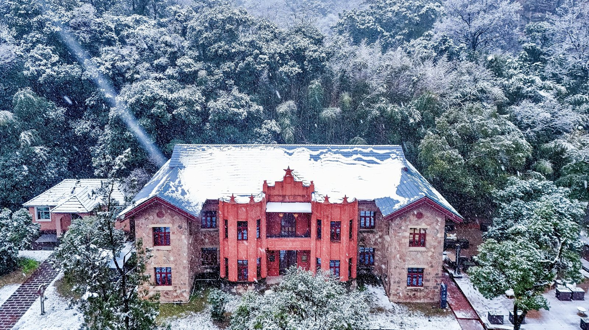
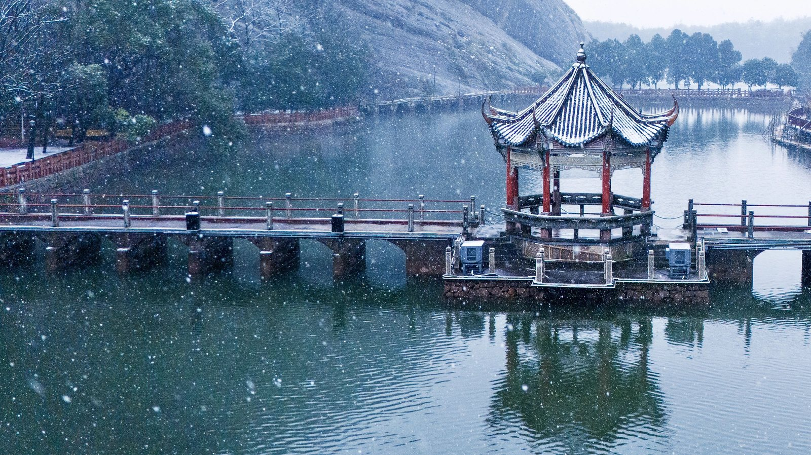
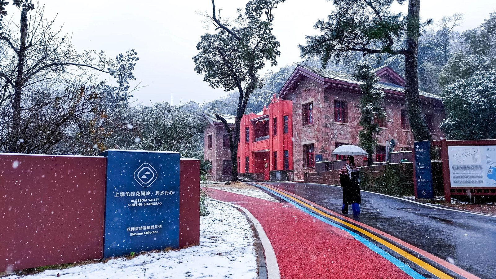
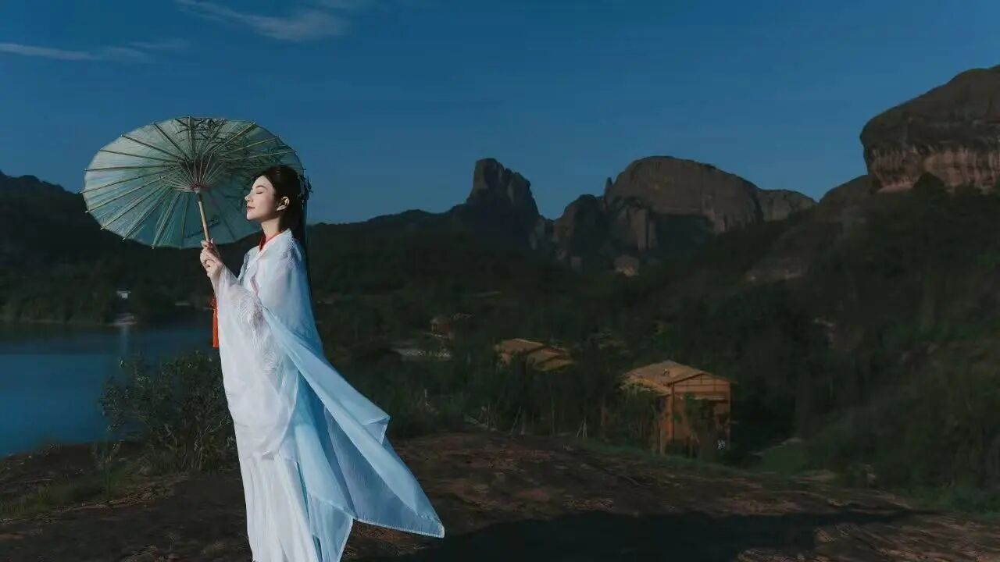

来龟峰等一场雪，此生也算共白头还记得武侠剧中 云海翻涌、山峰如黛的仙境画面吗？ 晨雾漫过丹霞石林，雪花轻覆灵龟探首🐢 远山如墨，云流如纱—— 这些只存在于镜头下的诗意景致 将在龟峰的冬日里悄然成真 龟峰的冬日 最让人心动的不是云，不是雾 而是那一场可遇不可求的雪  当雪花纷纷扬扬落下 这座亿万年的丹霞奇观 便从苍劲的赤壁红岩 转身成为一幅素雅灵动的水墨长卷  雪，是龟峰冬日最温柔的笔触 它落在“老人峰”的额前，落在“三叠龟”的背上 落在每一处嶙峋的岩石与静立的树枝上 红白交织，灿若琉璃 雪落无声，却让整座山谷都静了下来 只剩脚下咯吱的雪声与远山朦胧的轮廓 随手一拍 皆是“丹霞覆雪”的诗意大片  身着飘逸汉服 行走在被白雪覆盖的游步道上 衣袂翻飞间与漫天飞雪相拥 脚下的积雪发出轻柔的咯吱声 身旁的树木挂满雪挂 抬手拂去枝头积雪 瞬间闯入古风画卷 雪花簌簌落在油纸伞上 丹霞赤壁与皑皑白雪撞色 每一步都像踩在《红楼梦》的琉璃世界里 TIPS：建议穿上亮色披肩、搭配暖宝宝与防滑靴；雪天路面稍滑，行走时放缓脚步。 虽大雪未至，云海亦温柔 当晨光初醒，云雾从谷底缓缓升起 远眺群峰在云涛中若隐若现 人间喧嚷忽然遥远，唯有心随云舒 仿佛自己也成了画中仙 不用急于拍照，只需静立片刻 看流云过峰，听风穿林谷 心也随之轻盈起来 TIPS：云海多出现在温差较大、湿度高的清晨，建议提前查看天气。 冬日的龟峰，游人不多 正好静静走走 山风清冽，连呼吸都变得轻盈而干净 阳光穿过疏朗的枝桠 洒在清寂的游步道上 偶有鸟鸣从林中传来，石阶蜿蜒 每一步都像在天地间与自己对话  雪是冬天的特权，龟峰是浪漫的答案 这个冬天，何不来龟峰？ 也许推开清晨的雾，就能遇见云海 也许转过某个山角，便逢一场雪 在三十六峰之间，与天地共清欢
|